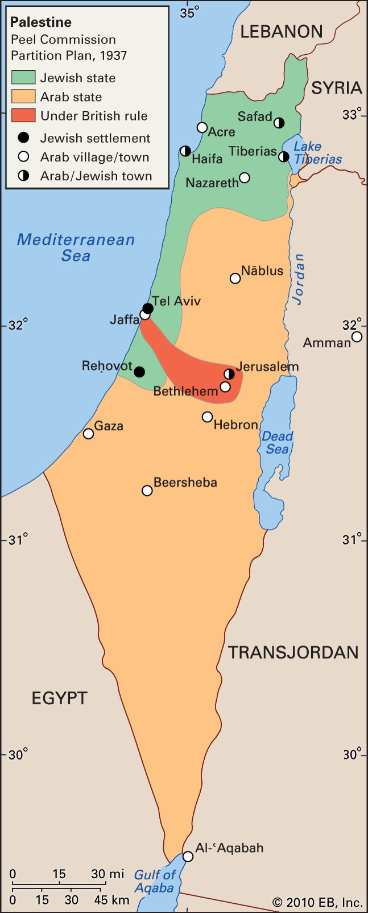

AKA - Great Arab Revolt https://en.wikipedia.org/wiki/Arab_Revolt
armed uprising led by the Hashemite-led Arabs against the Ottoman Empire rebelling against the Turks to accomplish an independent led Arab State
With backing from the British Military the Egyptian Expeditionary force fought and expelled the Ottoman Empire from much of the Hejaz and Transjordan. Signing the Sykes-Picot Agreement with the French Republic the British reneged on their promise to support the Arab's establishment of a singular Arab state. Instead, the Arab-majority Ottoman territories of the Middle East were broken up into a number of League of Nations Mandates
I do see here that when the British wrote out the Balfour Declaration establishing a homeland to the Jewish people but renegotiation a deal with the Arab's and changing the promise of the Arab's establishment could come off to the Arab people
Why did Britain Renegotiate their deal with the Arab's but then allow for a Jewish State when requested by Zionists?
1938 - 1939 https://www.britannica.com/place/Palestine/The-Arab-Revolt https://en.wikipedia.org/wiki/1936%E2%80%931939_Arab_revolt_in_Palestine
First sustained violence uprising of the Palestinian Arabs in more than a century. Several Arabs were mobilized to fight against the settlers and Israel claiming more territories.
It was mentioned in the Zionist Bible where the effect would be to marginalize and displace the indigenous Arab majority
Began with spontaneous acts of violence committed by the followers of Sheik Izz al-Din al-Qassam who was killed by the British in 1935.
April 1936, the murder of two Jewish people led to escalating violence. The Arab political forces formed an Arab Higher Committee which called for a general strike, nonpayment of taxes, end on migration from Jewish people, ban on land to sell jews and national independence.
Arabs with the strike, and by volunteers from neighboring Arab countries, went to the hills and attacked Jewish settlements and British installations in the northern region.
What causes the revolt?
The Peel Commission declared the British Mandate unworkable and that the conditions between the two groups were irreconcilable. The commission allotted an area that was immensely larger than the existing Jewish landholdings but recommending forcible transfer of the Arab population from the proposed Jewish state. The Zionism, still needed protection for their further development. From the Arab perspective it was horrifying the idea of dismembering the region and the suggestion of being forcibly transferred to Transjordan.

By September 1937, the British were forced to declare martial law and the Arab Higher Committee was dissolved and many other organizations were arrested.
The second phase was a peasant led resistance provoked by the British repression in 1936, where British forces were targeted. The rebellion was brutally suppressed by the British and the Palestine Police Force.
Wealth and Poverty contributed to the situations leading to the revolt. World War I left Palestine deeply impoverished. The Ottoman Empire and British Mandate authorities levied high taxes on framing and agriculture produce and during the 1920 - 1930s there was a fall in prices and cheap imports with led to increasing indebtedness. The rents increased and there was a growing transfer of land from Arabs to Jewish settlement agencies Jewish National Fund. This increased the number of fellahin evicted while also removing the land. The Shaw Commission identified landless people and a lot of the country's peasant farmers made up two-thirds of the indigenous Arab population were pushed off the land in increasingly large numbers into urban environments often encountering several Socioeconomic issues.
The British Mandate tried to limit the transfer of land from Arabs to Jews however was easily skipped by willing buyers / sellers. The government set, the minumum wage, for Arab workers below that of Jewish workers which meant that those making capital investments in the Yishuv's infrastructure could take advantage of cheap Arab labor from the countryside.
(1936–1939_Arab_revolt_in_Palestine, p.5) ] By 1935 only 12,000 Arabs (5% of the workforce) worked in the Jewish sector, half of these in agriculture, whereas 32,000 worked for the Mandate authorities and 211,000 were either self-employed or worked for Arab employers
The ongoing disruptian in the agrarian life who became mobile wage workers increasingly dealing with poverty and felt marginalize became willing participants in the rebellion.
Sheikh Izz ad-Din al-Qassam organized the Black Hand which was an anti-Zionist and anti-British militia. Three main jihadist groups that advocated for "armed struggle" 1. Green Hand (al-Kaff al-Kha ḍrā) 2. Holy Struggle (al-Jihād alMuqaddas) 3. Rebel Youth (al-Shabāb al-Thā'ir)
General strikes had been used by neighboring Arab countries to place political pressures on Western colonial powers.
The news sparked Arab fear of a Jewish military takeover in Palestine, al-Qassam gave a speech in the port of Haifa denouncing the Balfour Declaration. Following the incident after a Jewish officer died the Palestinian police launched a massive manhunt and surrounded al-Qassam in a cave where later in the battle he was killed which generated outrage among Palestinian Arabs.
Then uprising was triggered five months later by the Anabta shooting where the remnants of a Qassamite band stopped a convey on the road over revent of the death of al-Qassam and shot 3 Jewish passengers. There was a request for a solemn funeral but it was turned down by the district comissioner, who allowed al-Qassam a buriel later. The refusal sparked a demonstration by 30,000 jews in Tel Aviv who overcame the police and maltreated arab laborers and damaged property in Jaffa. The next day, Arab workers that were sleeping in a hut were killed in retaliation by members of the Haganah-Bet.
(1936–1939_Arab_revolt_in_Palestine, p.8) Jews and Palestinians attacked each other in and around Tel Aviv. Palestinians in Jaffa rampaged through a Jewish residential area, resulting in several Jewish deaths.[70] After four days, by 19 April, the deteriorating situation erupted into a set of countrywide disturbances. An Arab general strike and revolt ensued that lasted until October 1936.
The strike started where an Arab National Committee was formed where Nablus called for a general strike of all Arabs engaged in labor and transport and shopkeeping for the following day. Led to the formation of the Arab Higher Committee (AHC).
Comittees demand to British Government
[!info] (1936–1939_Arab_revolt_in_Palestine, p.8) 1. the prohibition of Jewish immigration 2. the prohibition of the transfer of Arab land to Jews 3. the establishment of a National Government responsible to a representative council
A month after the strike the leadership declared a general non-payment of taxes in opposition to Jewish immigration.
Huge target: Mosul–Haifa oil pipeline
Attacks consisted in various formats including civilian targets of Jewish settlements and, secluded Jewish neighborhoods.
Britain inundated Palestine with solders from the empire and took drastic measures such as house searches without warrant, night raids, preventive detention, caning, flogging, deportation, property confiscation, and torture.
Air Vice-Marshall Richard Peirse, commander of British forces in Palestine and Transjordan from 1933 to 1936:
(1936–1939_Arab_revolt_in_Palestine, p.9) It was quickly evident that the only way to regain the initiative from the rebels was by initiating measures against the villagers from which the rebels and saboteurs came ... I therefore initiated, in co-operation with the Inspector-General of Police R. G. B. Spicer, village searches. Ostensibly, these searches were undertaken to find arms and wanted persons, actually the measures adopted by the Police on the lines of similar Turkish methods, were punitive and effective.[84]
June 2, an attempt by rebels to derail a train bringing the Battalian from Egypt led to a response from the British in rounding up a large number of palestinian leaders and sent them to a detention camp.
Battle of Nur Shams marked an escalation.
During July, Arab volunteers helped the rebels divide their formations into four fronts. A statement from the office in London declared the situation a d "direct challenge to the authority of the British Government in Palestine" and by the end of September 20K British troops in Palestine were deployed to "round up Arab bands."
Peel Commission was a proposal however failed and developed into the Woodhead Commission.
With the failure of the commission the Arab Revolt resumed marking the assassination of a district commissioner. Following this as in the Galilee Jewish people were advised to create a defense force, regulations were passed on the government to detain political deportees in any of the British Empire. Haj Amin al-Husseini was removed from leadership, the Arab Higher Committee was disbanded, and five Arab leaders were deported to Seychelles. All frontiers with Palestine were closed with telephone connections to neighboring countries being disbanded, higher press censorship and a
a special concentration camp was opened?
November 1937, the Irgun rejected the policy of the Havlagah and embarked on a indiscriminate attacks against Arab civilians as a form of active defense against Arab attacks on Jewish civilians. The British set up military courts, which established trial of offenses especially with carrying arms, however since the British government.
Attacks and Causalities
(1936–1939_Arab_revolt_in_Palestine, p.12) n the final fifteen months of the revolt alone there were 936 murders and 351 attempted murders; 2,125 incidents of sniping; 472 bombs thrown and detonated; 364 cases of armed robbery; 1,453 cases of sabotage against government and commercial property; 323 people abducted; 72 cases of intimidation; 236 Jews killed by Arabs and 435 Arabs killed by Jews; 1,200 rebels killed by the police and military and 535 wounded.
Response
(1936–1939_Arab_revolt_in_Palestine, p.13) Military law allowed swift prison sentences to be passed.[111] Thousands of Arabs were held in administrative detention, without trial, and without proper sanitation, in overcrowded prison camps.
The British organized collective fines, which became a heavy burden on the poor Palestinian villagers especially since the army confiscated livestock. Additionally, imposed curfews, demolished houses, detained some or all Arab men in distant detention camps.
'statutory' martial law was imposed and following the Arab capture of the Old City of Jerusalem, the army took control of Jerusalem and then all of Palestine and the main form of collective punishment by the British was destruction of property. - Ma'ir destruction - October 1938 - entire villages being destroyed - Jaffa destruction - June 16 1936 - > (1936–1939_Arab_revolt_in_Palestine, p.13)
large gelignite charges were used to cut long pathways through the old city, destroying 220–240 buildings and rendering up to 6,000 Arabs homeless. - HMS Malaya
Large amount of brutally by the British forces occurred, which include beatings, torture and killing. Royal Ulster Rifles, described massacre at al-Bassa:
(1936–1939_Arab_revolt_in_Palestine, p.14) Now I will never forget this incident ... We were at alMalikiyya, the other frontier base and word came through about 6 o'clock in the morning that one of our patrols had been blown up and Millie Law [the dead officer] had been killed. Now Gerald Whitfeld [Lieutenant-Colonel G.H.P. Whitfeld, the battalion commander] had told these mukhtars that if any of this sort of thing happened he would take punitive measures against the nearest village to the scene of the mine. Well the nearest village to the scene of the mine was a place called al-Bassa and our Company C were ordered to take part in punitive measures. And I will never forget arriving at al-Bassa and seeing the Rolls-Royce armoured cars of the 11th Hussars peppering Bassa with machine gun fire and this went on for about 20 minutes and then we went in and I remembered we had lighted braziers and we set the houses on fire and we burnt the village to the ground ... Monty had him [the battalion commander] up and he asked him all about it and Gerald Whitfeld explained to him. He said "Sir, I have warned the mukhtars in these villages that if this happened to any of my officers or men, I would take punitive measures against them and I did this and I would've lost control of the frontier if I hadn't." Monty said "All right but just go a wee bit easier in the future."[1]
Villagers were also searched by the British, Lieutenant-General Haining report of method for searching villages:
(1936–1939_Arab_revolt_in_Palestine, p.15) A cordon round the area to be searched is first established either by troops or aircraft and the inhabitants are warned that anybody trying to break through the cordon is likely to be shot. As literally hundreds of villages have been searched, in some cases more than once, during the past six months this procedure is well-known and it can be safely assumed that cordonbreakers have good reasons for wishing to avoid the troops. A number of such cordonbreakers have been shot during searches and it is probable that such cases form the basis of the propaganda that Arab prisoners are shot in cold blood and reported as "killed while trying to escape". After the cordon is established the troops enter the village and all male inhabitants are collected for identification and interrogation.
The British also enforced punitive measures onto cities with a night-curfew being imposed on most cities. It was additionally a common practice the British army use local Arabs as human-shields like Hamas forcing them to ride with military convoys to prevent mine attacks and sniping incidents as soldiers would tie hostages to the bonnets of lorries / put them on small flatbeds. Arthur Lane, Manchester Regiment recalled:
(1936–1939_Arab_revolt_in_Palestine, p.15) ... when you'd finished your duty you would come away nothing had happened no bombs or anything and the driver would switch his wheel back and to make the truck waver and the poor wog on the front would roll off into the deck. Well if he was lucky he'd get away with a broken leg but if he was unlucky the truck behind coming up behind would hit him. But nobody bothered to pick up the bits they were left. You know we were there we were the masters we were the bosses and whatever we did was right ... Well you know you don't want him any more. He's fulfilled his job. And that's when Bill Usher [the commanding officer] said that it had to stop because before long they'd be running out of bloody rebels to sit on the bonnet.
Tegart Fort - stemmed from Charles Targart - 70 fortressed throughout palestinian villages at choke points - introduced Arab Investigation Centres where prisoners faced brutal conditions
Role of Royal Air Force
The Royal Air Force developed close air support into the most refined dorm during the Arab Revolt and was seen as effective in keeping convoys and trains free from attack. Air power seemed to be successful overall.
Role of Royal Navy
At the initial stage of revolt, from Haifa Naval Force two cruisers were used to carry out tasks ashore. The Royal Navy used naval mines from HMS Malaya to destroy Palestinian houses.
Haifa Importance
Britain had completed deep port in Haifa and was finished laying a pipeline from the Iraqi pipeline to Haifa for oil. A refinery for processing oil which was jointly owned by the British and Royal Dutch Shell. This enhanced the importance of Palestine and as the threat of the British control also seemed to be threatened as a rise of Fascism in Italy and the worsening situation the British were more likely to to make concessions in favor of Arab governments which over the recommendations of the Peel Commission.
Role of the British Intelligence Services
The deployment of British intelligence systems made it necessary as a counter strategy to restoration of British imperial control in Palestine. The rebellion brought together urban nations and Socioeconomic conditions from the Economy. The revolt targeted the political and apparatus of the British colonial state which included the networks, and communication forces as the main aspects for the motivation of the revolt. As the general strike seemed to from and resurgence of pan-Aran nationalism forced the British response to the challenges led to a role of the Special Service Officers assigned to intelligence reporting with cats equipped with wireless transmitters.
British and Jewish co-operation
The Haganah defense in Hebrew supported British efforts to suppress the uprising and coopering with the formation of special defense forces. The Special Night Squads engaged in activity described by Sir Hugh Foot as 'extreme and cruel' involving pain, torture, and killing of Arabs. The British armed the forces and authorized Jewish policeman to equip guns, distributing weapons throughout the settlements.
June 1937, the British imposed the Death Penalty for unauthorized possession of weapons, ammunition, and explosives but since many Jewish people had permission to carry weapons this act primarily targeted Palestinian Arabs. - Acre Prison - 108 hung dead
Jewish and British forces often worked together in manhunts, and collective actions against villages discussing the imposition of penalties and sentences.
Revisionist Zionism
Role of the "peace bands"
Role of the rebel leaders - loosely organized bands - Jewish / British referred to them as terrorists / bandits and were divided into the fadayeen and the mujahadeen.
Jabal Nablus area
Funding - The British Mandate's was bankrolled from landing through the stream of land supplied by administration of land and property taxes, stamp duties, and etc. - Draconian collective punishment heavily affected the peasantry. - Revenue extracted from the punitive fines exceeded more than the compensation for the revenue lost during the revolt - The majority of funds raised came from Arab/Muslim sources filtered from Egypt, Syria, Iraq, and Muslim India. - Women donated jewelry and ran fund-raising committees, jihad tax was placed - levies imposed on the wealthier Arabs
(1936–1939_Arab_revolt_in_Palestine, p.25) A great deal of speculation later arose around the purported role of Germany and Italy in backing the revolt financially, based on early claims by Jewish operatives that both countries were fomenting the uprising by funneling cash and weapons to the insurgents.[l] German plans to ship arms to the rebels were never implemented due to distrust of the Saudi middlemen.[199] Italian attempts to furnish arms by the same venue were thwarted by British intelligence.[191] The British never found arms or munitions of German or Italian provenance. RAF intelligence dismissed these claims as either referring to 'comparatively small' sums or as purveyed to bring discredit on the Palestinians. - Seemed to receive funding from fascist Italy and Germany
Impact on Yishuv
Impact on Palestinian Arabs
Impact on the British Empire - as the War with Germany approached British policy makers concluded they could rely on the Jewish population in Palestine as they had little to no choice but to support Britain, however the Arab governments support was a strategic important for the British Empire. Prime Minister Neville Chamberlain:
"if we must offend one side, let us offend the Jews rather than the Arabs."
Major-General Bernard concluded: "the Jew murders the Arab and the Arab murders the Jew. This is what is going on in Palestine now. And it will go on for the next 50 years in all probability." - discussing the situation of what is going on with Palestine Israel - The statement boils out to be true when looking at some other conflicts such as the The First Intifada, Second Intifada, Israel-Hamas War - October 7, Six Day War, Yom Kippur War evaluating the situation of the Palestinian Refugees and, failing Two State Solution proposals from both sides and etc.
Histography - The Zionist version of Israeli History acknowledges the one national movement of the struggle for Jewish self-determination that resulted in the Israel declaration of independence, - Western scholars have little to say about the anti-colonial struggle of the Palestinian Arabs - David Ben-Gurion: the Arabs, he said were "fighting dispossession... The fear is not losing land, but losing the homeland of the Arab people, which others want to turn into the homeland of the Jewish people"
Other Stuff + Conclusions
(1936–1939_Arab_revolt_in_Palestine, p.4) The Arab revolt in Mandatory Palestine was unsuccessful, and its consequences affected the outcome of the 1948 Palestine war.[30] It caused the British Mandate to give crucial support to pre-state Zionist militias like the Hagenah, whereas on the Palestinian Arab side, the revolt forced the flight into exile of the main Palestinian Arab leader of the period, al-Husseini.
Seemed to be unsuccessful in many ways. The general strike was called off in October 1939 and the Arabs of Palestine were unable to recover from the sustained effort of defying the British Rule. The traditional leaders of the Arab movement were either killed, arrested, or deported leaving the dispirited and disarmed population divided along the urban-rural, class, clan and religious lines. The Zionists were united behind Ben-Gurion and the Haganah which received permission to be armed.
The Woodhead Commission was set up to examine the practicality of the Partition Plan. It recommended against the Peel Commission's plan and put alternative solutions together.
Later the British issued the White Paper which was curbed towards the Arab's favor limiting immigration, however it seemed that the Arab's stilled opposed the White Paper due to the mistrust of the British Government. The Zionists were shocked by the paper as well and saw as a death to the promise of Jewish people being promised a homeland.
Between 1922 - 1940 more progress was established in jewish immigration as literacy rates approved and Tel Aviv had developed into an all-Jewish city of 150k inhabitants. There became a split between mainstream Zionism and the radical Revisionists what advocated the use of force to establish a Zionist state.
After The United Nations Partition Plan for Palestine, or Resolution (II), the Zionists mobilized their forces and redoubled their efforts to bringing in immigrants. December 1947, the Arab League pledged its support and organized 3,000 volunteers. Civil war spread. United States Position on Israel - Palestine was the opposition to forcibly implementing a Partition Plan. On March 30th the United States proposed that a truce be declared and that the problem be further considers by the General Assembly.
On April 22, Haifa fell to the Zionists, and Jaffa after mortal shelling surrendering on May 13th.